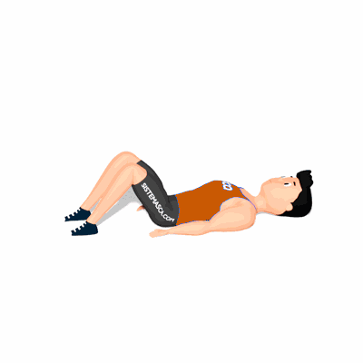

Alongamento Deitado de Glúteo

Exercício de alongamento para os glúteos, preparando para a atividade física.
Ficha Técnica
Tipo: Alongamento
Grupo Muscular: Glúteo
Aparelho: Nenhum
Músculos: Nenhum
Como realizar
- Deite-se no solo;
- Cruze uma das pernas sobre a outra de modo que o tornozelo da perna que está em cima fique colado um pouco acima do joelho da outra perna;
- Após isso, puxar as pernas em direção ao tronco segurando por trás da coxa da perna que está embaixo.
 RC STORE
RC STORE